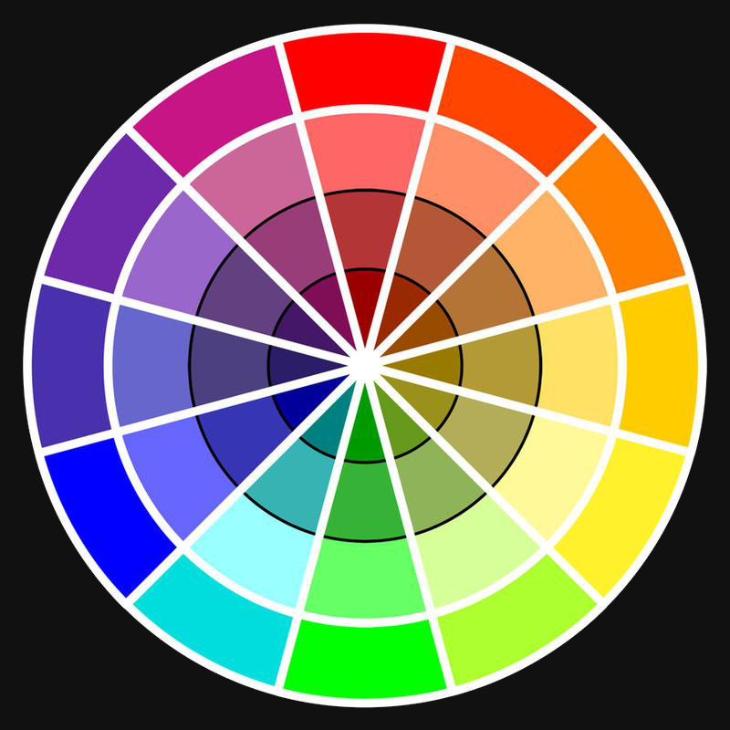

Roshan -> Sachet
Surabhi -> Sakar
Rajesh Hamal -> Nepali Janta
Relationships come with feelings
Where do you go for Dasai?
Where do you go for Bhai tika?
Chokkho - Jhutho - Death
Relationships come with obligations
Don Norman: walking a plank
to improve communication ability
to allow you idea to propagate better
Why do we need them?
Billions naturally
Millions on computers
Thousands in print
RGB - better for digital because pixels use them
CMYK - better for print. Mix the four colors to print
HSL - another way to understand color
1. using fixed rules of color laid out designers from the past
2. using well known patterns as guidelines
3. having culture specific knowledge of the emotions colors evoke
4. picking the appropriate color system for the medium used
1. They help propagate ideas by evoking emotions
2. They make us look cool
3. Because beautiful things are worth creating for their own sake
4. They keep users engaged giving us the space to teach
is your best friend... for today! 
RGB (Red, Green, Blue)
HSL (more human)
Hue - base color
Saturation - amount of grey in Hue
Level - amount of white in Hue
Open Inkscape Fill box with RGB: 255 0 0 Switch to HSL Play with Saturation and Level Switch between HSL/RGB
Play with Saturation and Level Switch between HSL/RGB
Colors support each other to communicate certain emotions
We can use these relationships to improve our design
Opposites on the color wheel
Open: http://colorschemedesigner.com/
Count 1/2
Group 1: make it exciting
Group 2: make it calm
Spend 5 mins using and pick 2 sets of complementary colors
Spend 2 mins (each) discussing with the person next to you
Narrow it down to 1 at the end of the conversation
Open smallColor.svg in Inkscape
10 mins to fill in colors
Put on one of three pen drives
Whole class analysis (make a hand out for the analysis)
Tips:
Use Spacebar to toggle
Don't delete objects
Next to each other
https://kuler.adobe.com/